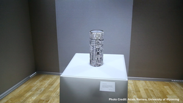
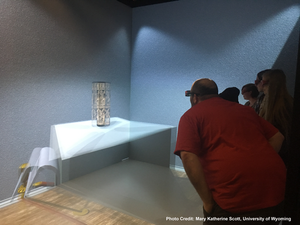

September 07, 2017

This is part 1 of a 5-part series on virtual reality in humanities. This article series explores the trends and use cases of how universities are utilizing VR and visualization to further explore research and public engagement opportunities in the humanities.
A public reception at a nearby art gallery is featuring a Mesoamerican vase from pre-Columbian times. That evening, local patrons and students enter the art gallery quietly. They scan the supplementary materials about the region and the era displayed on the wall’s large screens and from printed handouts. Attendees round the corner, and there sits the vase. Each patron patiently waits their turn, then dons 3D glasses before approaching the historical artifact within the CAVE. In turn, each individual is amazed at the vase’s detail and realism before stepping out of the CAVE and passing the glasses to the next guest in line.
Traditional museums showcase historical and priceless artifacts behind glass cases. But for the University of Wyoming, a new type of museum experience has become familiar. Three years ago, Dr. Mary Katherine Scott, the acting director for international programs and visiting assistant professor in art history, saw a radical chance to make history come alive with the use of virtual reality within the CAVE at the university’s Shell 3-D Visualization Center.
|
“Archeology and art history are changing as disciplines. But combining them with visualization is proving to be a really powerful way to study the past.” - Dr. Mary Katherine Scott |
Dr. Scott’s practical studies began over a decade ago in Yucatán, Mexico, to research the past and present of Maya art, architecture, and culture of the Maya. Much of her research has focused on the objects made by local artisans for sale to tourists within Yucatán’s art markets. Tourists want high-quality art pieces that mimic the imagery they see at historical sites, yet do not value the products as highly as the originals. This is a result of an individual’s “value system,” or placing differing values on replications versus the original itself.
“I wanted to understand why does the tourist not value the replica – which can cost thousands of dollars – as highly as the original it’s based on,” Scott explained. “It’s still handmade by immensely talented local artisans in the traditional way. So, where’s the disconnect?”
Dr. Scott took to the University of Wyoming to expand her research on value systems. Building off the idea of replicas in tourist art markets, how would a reproduced or virtual object stack up against an authentic item in an individual’s value system? To test her idea, she hosted one of the most unique experiments in the virtual world and uncovered significant implications in the field of humanities.
At the Art Institute of
Chicago, visitors can find an eighth-century Mayan vase known as the Vase of
the Seven Gods, made in the Naranjo region of Guatemala. Such vases were prized
possessions of the nobility, made by the finest artists of classic Maya society.
Because Scott’s research explores the negotiation of meaning and value between
replicas and originals, she worked with a group of interns to meticulously
design a 3D replica of the vase. The visualization is based on a nearly exact
replica made by a contemporary Maya artisan in the Yucatán instead of the
original itself.
“If we’re really thinking about authenticity as the basis for a person’s
understanding of value, then why not use another a replica, or another
simulation of this replica to test how people perceive authenticity?” questions
Scott. “And if we’re already trying to determine how people judge authenticity,
in this case the authenticity of the experience with the object, let’s judge it
in the CAVE.”

Once
the vase was completely recreated in the CAVE, Scott established the parameters
of her experiment. She presented it like a formal art reception, inviting the
public to come view a Mesoamerican artifact at the Shell 3-D Visualization
Center. At the start of the event, supplemental display materials and media
described the history of the vase, the region, and its contemporary context to
the audience, but she avoided giving any clues about how it would be presented.
“I didn’t tell them what they were expected to do or how they would see the
vase,” explains Scott. “The most interesting thing was to see how the first few
people reacted to the space, because it was at the same familiar and completely
different from anything they had experienced before.”
Upon entering the CAVE, the first few brave patrons were stunned by how real
the vase looked. Viewers stuck close to the walls of the CAVE, keeping their
hands behind their back at a safe distance just as they might in a traditional
gallery setting. Then after a few visitors, the experience began to change.
“Eventually, someone will try to touch it,” says Scott. “You really can’t tell
it isn’t an object that’s right there in front of you. When their hand goes
through the simulation, you can almost see them thinking, ‘Oh yeah, this is
virtual. It’s not really there.’”
In the second phase of the experiment a year later, Scott incorporated a new
variable commonly found in traditional museums with high-value collections: if
someone came too close to the vase, an alarm sounded and a red warning light
began to flash. Most participants took a step back to keep their distance, but
a few individuals continued to push into the simulation. Finally, Scott added
the last element to her experiment. This time, when a participant ignored the
warning alarms and reached out to touch the vase, it tipped over and shattered
on the floor.
Art doesn’t last forever. Throughout history, art has always been at risk of destruction. Bombings throughout the world in the last century have destroyed sculptures, paintings, and other artifacts thousands of years old. Beyond that, art is made of organic materials that decay through natural disasters and the passage of time. 3D visualization offers another method of preserving priceless artifacts from the past.
|
“Objects play a hugely important role in human history, it’s how we strive to understand our world,” says Scott. “The impact 3D visualization has for conservationists, art historians, and archeologists is incredible. It offers one way to study historical sites and artifacts from a safe distance that is sensitive to their longer-term preservation.” |
It’s not just virtual reality on its own that provides a way to preserve our history. Combining visualization with other technologies, such as laser measurements or heat photography, are all building blocks to understanding and recreating our past.
“We can rebuild an entire archeological site,” explains Scott. “We can take extremely high-quality photographs and preserve them in the virtual world.”
The question of placing value on recreations raises a greater implication for the humanities and the arts. The sting of losing historical artifacts lessens if individuals can learn to value reconstructions or recreations as highly as the original. Experiencing historical sites and artifacts in virtual reality provides a new way to have an intimate and significant experience with the most priceless artifacts from anywhere in the world.
Artifacts and experiences in VR are more real than they seem. When the virtual Mesoamerican vase shatters, patrons clearly consider the virtual experience to be authentic.
“The individuals who shatter the vase feel so bad if they break it,” says Scott. “There is a strong emotional attachment to the experience, and ultimately to the simulated object. This is an authentic experience because patrons can interact with the object in such an intimate way, much more so they can do in a physical gallery setting.”
Dr. Scott’s experimental practices over the last three years have led her to using virtual reality as a new way to teach art history. “There are lots of reasons why the CAVE is such an innovative and valuable tool,” says Scott. “You just don’t have the same experiences looking at flat photographs of objects in a textbook.”
Learn more about Mary Katherine Scott’s research. Learn more about the Shell 3-D Visualization Center.